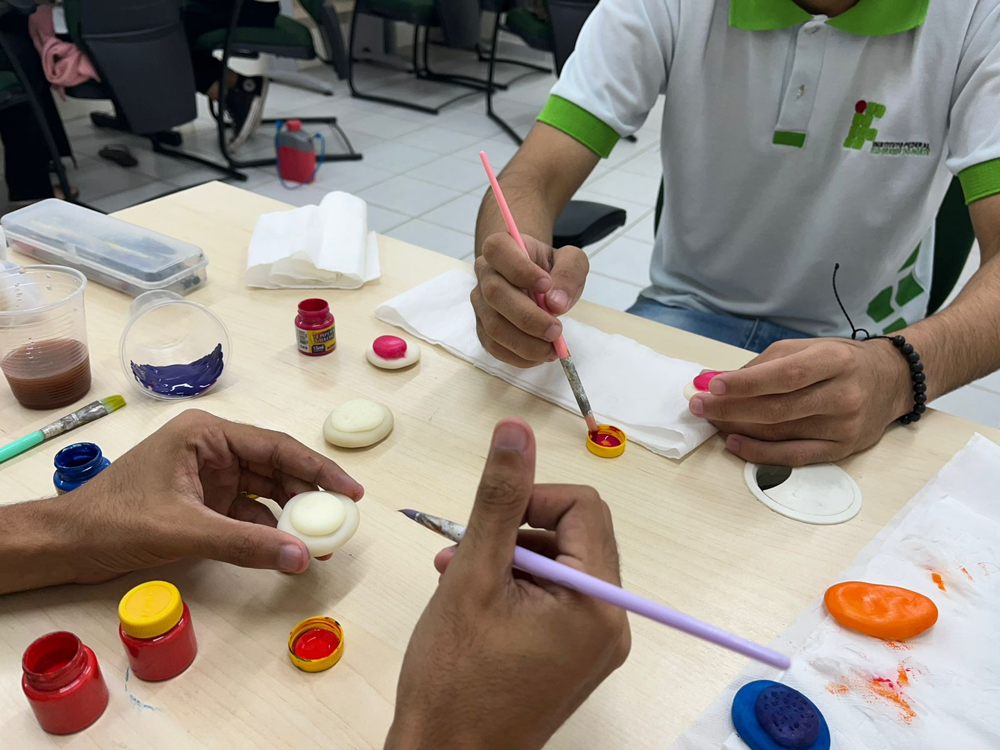

Linha do Tempo da Construção da Maquete



- Sorteio do Tema: Em sala de aula, um sorteio mediado a partir do professor de Biologia definiu o tema referente ao do presente projeto da disciplina - Hemácias e suas funções.
- Estudo acerca do tema: Realização de pesquisas dadas por páginas na web, livros e artigos que corroborem para a compreensão acerca do tema.
- Idealização do site: Criação de uma plataforma digital acessível e dinâmica, permitindo a exploração visual e textual de informações sobre essas células sanguíneas, sua estrutura, função e importância no corpo humano.
- Planejamento da maquete: Identificação de componentes essenciais para a representação em miniatura das Hemácias - estrutura interna e externa; anomalias; desenvolvimento celular; fluxo sanguíneo.
- Escolha de materiais: Decisão dos materiais a serem utilizados para a construção da maquete, o que inclui: massa de biscuit, barbante, palito de churrasco, folhas de papel alumínio, cartolina de acetato, dois ventoinhas, um microcontrolador, uma bateria, tintas guache e cola quente e uma placa de isopor.
- Construção e pintura das estruturas de forma individual: A partir dos materiais selecionados, o grupo se reuniu para colocar em prática a produção dos componentes determinados no planejamento da maquete.
- Estrutura externa da hemácia: Dada pela união entre o papel alumínio - para o esqueleto principal - e a massa de biscuit - para a modelagem bicôncava da hemácia -, além de uma espessa camada de tinta vermelha para a coloração.
- Estrutura interna da hemácia: A utilização de papel alumínio, barbante, massa de biscuit e tinta foi imprescindível para a representação horizontal de uma hemácia, destacando a hemoglobina, o grupo heme e o oxigênio.
- Hemácias anômalas e anemias: Com o auxílio de palito de churrasco e massa de biscuit, miniaturas de hemácias anômalas foram modeladas a fim de relacioná-las às suas respectivas anemias.
- Desenvolvimento da célula da hemácia:A massa de biscuit e as tintas azul e vermelha foram essenciais para a composição da linhagem eritróide.
- Artéria e fluxo sanguíneo:Com o auxílio de acetato para a formação da estrutura de um canal venoso, e a junção das ventoinhas com o microcontrolador formando a direção da corrente sanguínea.
- Junção das partes: Após a finalização dos componentes de forma individual, eles foram reunidos em uma base de isopor para a adequada visualização das estruturas.
- Finalização e ajustes:Para a finalização, ajustes e detalhes estéticos foram incluídos, visando a conclusão da maquete.
Confira o progresso do projeto em vídeo!